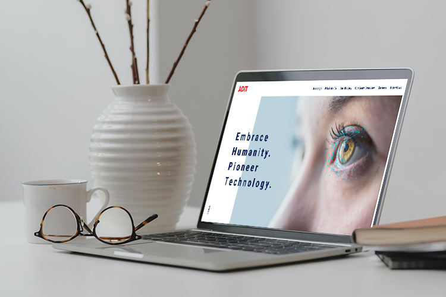
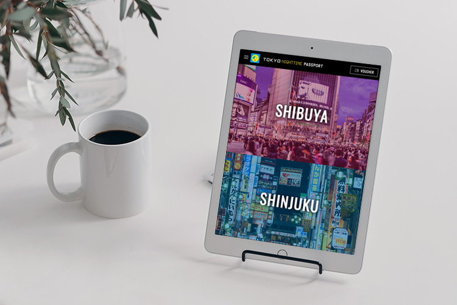
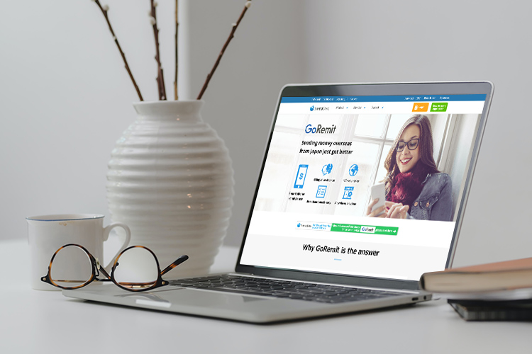
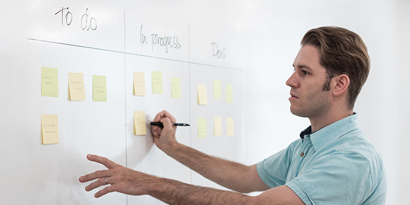
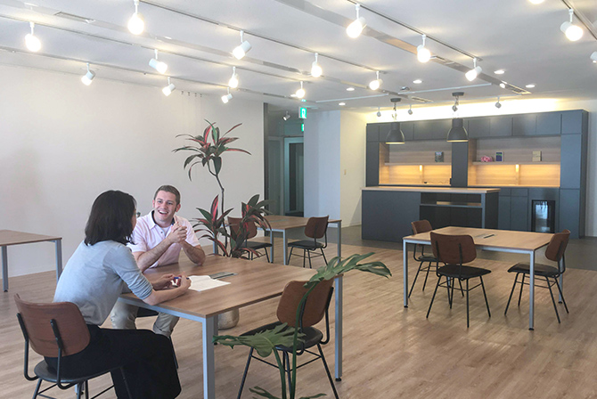
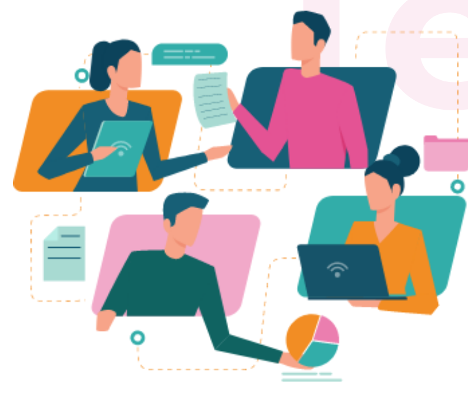

ネイティブの目線と感性を活かした
クリエイティブなWebサイト制作
Webサイトのキャッチコピーやデザイン、
そしてプロジェクトのディレクションも。
多国籍なクリエイティブチームで、
ターゲットに分かりやすく、伝わるグローバルサイトを制作します。
ネイティブの目線と感性を活かした
クリエイティブなWebサイト制作
Webサイトのキャッチコピーやデザイン、
そしてプロジェクトのディレクションも。
多国籍なクリエイティブチームで、
ターゲットに分かりやすく、伝わるグローバルサイトを制作します。
Native Perspectives
ネイティブ目線
×
Multilingual Creation
多言語クリエイション
×
Web Production
Web制作
徹底した「ネイティブ目線」であること――それがエスケ
イワードのこだわり。
プロジェクトチームにネイティブスタッフと
海外経験豊富なバイリンガルスタッフをアサインし、
ターゲットと同じ目線と感性でグローバルサイトを制作。
ネイティブの心に刺さるコピーとメインビジュアルをお届けします。
Native Perspectives
ネイティブ目線
×
Multilingual Creation
多言語クリエイション
×
徹底した「ネイティブ目線」であること――それがエスケイワードのこだわり。
プロジェクトチームにネイティブスタッフと
海外経験豊富なバイリンガルスタッフをアサインし、
ターゲットと同じ目線と感性でグローバルサイトを制作。
ネイティブの心に刺さるコピーとメインビジュアルをお届けします。
Hello！
Strong point 01
英語でのWebディレクションも対応可能
働き方のスタイルが、また大きく変わろうとしています。
どこにいても仕事ができる時代。
人の流れが減少しても、グローバルの波は止まりません。
ビジネスはさらにグローバル化し、
一緒に仕事をするパートナーやクライアントは
ますます多国籍になっていくでしょう。
求められていくのは「人」のグローバル化。
これまでは一部の人が海外に出張し交渉やプレゼンを行っていた企業でも、
個人が英語でコミュニケーションを取る場面が増えていくかもしれません。
社内公用語が英語の企業でのWebサイトプロジェクト推進やディレクション。
グローバル企業が国をまたいで作成するガイドラインやグローバルサイト。
海外企業への企画提案やプレゼンテーション。
グローバルコミュニケーションを推進するエスケイワードが、
どんな場面でも英語でサポートします。
Web制作のプロでもあり、言語の専門家でもある。
英語でのWebディレクションやプロジェクト進行、
グローバルサイトの制作にご不安を抱えているなら、
エスケイワードにぜひご相談ください。
Ciao！
Strong point 02
グローバルコミュニケーションをデザインする
英語でのプレゼンテーション。
見たことはあるけど何かが違う。
効果的な伝え方はどんなものだろう。
日本語でプレゼンテーションに慣れていても
英語になると途端に緊張してしまったり、
うまく話せなくなってしまったりすることがあります。
英語特有の言葉選びや間の取り方が
プレゼンテーションの印象を大きく変えます。
N1資格を持つ英語ネイティブと英会話講師の経験もあるバイリンガルが、
資料の英語化だけではなく、プレゼンテーションのシナリオ作成から
進行役の代行まで対応。
もちろん、お客様ご自身でのプロジェクト進行も支援します。
外国人目線でのアドバイスや英会話サポートなど、
お客様のベストパートナーとして
スムーズなプロジェクト進行にご協力いたします。
Strong point 01
英語でのWebディレクションも
対応可能
働き方のスタイルが、また大きく変わろうとしています。
どこにいても仕事ができる時代。
人の流れが減少しても、グローバルの波は止まりません。
ビジネスはさらにグローバル化し、
一緒に仕事をするパートナーやクライアントは
ますます多国籍になっていくでしょう。
求められていくのは「人」のグローバル化。
これまでは一部の人が海外に出張し交渉やプレゼンを行っていた企業でも、
個人が英語でコミュニケーションを取る場面が増えていくかもしれません。
社内公用語が英語の企業でのWebサイトプロジェクト推進やディレクション。
グローバル企業が国をまたいで作成するガイドラインやグローバルサイト。
海外企業への企画提案やプレゼンテーション。
グローバルコミュニケーションを推進するエスケイワードが、
どんな場面でも英語でサポートします。
Web制作のプロでもあり、言語の専門家でもある。
英語でのWebディレクションやプロジェクト進行、
グローバルサイトの制作にご不安を抱えているなら、
エスケイワードにぜひご相談ください。
Strong point 02
グローバルコミュニケーションをデザインする
英語でのプレゼンテーション。
見たことはあるけど何かが違う。
効果的な伝え方はどんなものだろう。
日本語でプレゼンテーションに慣れていても
英語になると途端に緊張してしまったり、
うまく話せなくなってしまったりすることがあります。
英語特有の言葉選びや間の取り方が
プレゼンテーションの印象を大きく変えます。
N1資格を持つ英語ネイティブと英会話講師の経験もあるバイリンガルが、
資料の英語化だけではなく、プレゼンテーションのシナリオ作成から
進行役の代行まで対応。
もちろん、お客様ご自身でのプロジェクト進行も支援します。
外国人目線でのアドバイスや英会話サポートなど、
お客様のベストパートナーとして
スムーズなプロジェクト進行にご協力いたします。
いつでも、どこでも
オンライン無料体験
エスケイワードでは翻訳からプロジェクト管理、
Web制作までをオンラインで気軽に無料でご相談いただけます。
Our Project
01

ネイティブ目線で、提案から業務推進まで
英語による進行が可能
日本とドイツに拠点を構える企業が、会社の「顔」となる初のWebサイトを制作。プロジェクトのスムーズな進行には、Webサイト制作の実績だけではなく、共通言語である「英語」でのディレクションが不可欠でした。コンペのプレゼンから始まり、メールのやり取りやミーティングまで、すべて英語で推進。日本語でのプロジェクトと同じように、ご提案からご納品までスムーズなマネジメントが可能です。
02

多国籍のプロジェクトチームで
外国人目線を追求
「徹底的な外国人目線で制作してほしい」というクライアントのご要望から、様々な切り口で「外国人目線」を追求。プロジェクトメンバーにアメリカ出身のライターとスペイン出身のデザイナーを加え、外国人の感性を活かして心を動かすビジュアルとコピーを作成しました。外国人だからこそ分かる不安や不明点にも着目し、解決までの導線を含めた情報設計を施しています。
03

伝える側・伝えられる側の
2つの視点で制作
「欧米のユーザーに分かりやすいサイト」を目指して、伝える内容によって表現方法を工夫。「伝える側」の視点を持つ日本人スタッフと「伝えられる側」の視点を持つ外国籍スタッフで話し合い、従来の内容から重要なポイントを厳選しました。ネイティブライターが欧米向けに内容のリライトを行い、新たなキャッチコピーを作成。説明が難しいところでは図式を活用し、分かりやすさを追求しています。
Our Projects
01
ネイティブ目線で、提案から業務推進まで
英語による進行が可能
日本とドイツに拠点を構える企業が、会社の「顔」となる初のWebサイトを制作。プロジェクトのスムーズな進行には、Webサイト制作の実績だけではなく、共通言語である「英語」でのディレクションが不可欠でした。コンペのプレゼンから始まり、メールのやり取りやミーティングまで、すべて英語で推進。日本語でのプロジェクトと同じように、ご提案からご納品までスムーズなマネジメントが可能です。
02
多国籍のプロジェクトチームで
外国人目線を追求
「徹底的な外国人目線で制作してほしい」というクライアントのご要望から、様々な切り口で「外国人目線」を追求。プロジェクトメンバーにアメリカ出身のライターとスペイン出身のデザイナーを加え、外国人の感性を活かして心を動かすビジュアルとコピーを作成しました。外国人だからこそ分かる不安や不明点にも着目し、解決までの導線を含めた情報設計を施しています。
03
伝える側・伝えられる側の
2つの視点で制作
「欧米のユーザーに分かりやすいサイト」を目指して、伝える内容によって表現方法を工夫。「伝える側」の視点を持つ日本人スタッフと「伝えられる側」の視点を持つ外国籍スタッフで話し合い、従来の内容から重要なポイントを厳選しました。ネイティブライターが欧米向けに内容のリライトを行い、新たなキャッチコピーを作成。説明が難しいところでは図式を活用し、分かりやすさを追求しています。
Our Policy
01
英語での進行管理代行で不安を安心へ
プロジェクトのディレクションを英語で行わないといけなくなった――。そんなときはエスケイワードにぜひご相談ください。講師経験もある英語ネイティブとバイリンガルが、プレゼンテーションのシナリオ作成からグローバルサイトの制作ディレクションまで対応。もちろん、ご自身での英語プレゼンテーションやディレクションもサポートいたします。
02
Web制作チームとの完璧な連携
エスケイワードの強みは、多言語Webサイトの制作をワンストップでお任せいただけること。社内に翻訳チームとWeb制作のチームがあるため、英語ディレクションだけではなく、グローバルサイト制作も対応可能。複数の会社とやり取りいただく必要はございません。シームレスな連携でスムーズに進行します。
03
アフターフォローもしっかり
グローバルサイトの作成が目的ではない。あくまでも、その先のゴールのための通過点でしかないと考えています。グローバルサイト完成後にネイティブユーザー目線でチェックをしたり、その後の運用を多言語で発信したり。グローバルコミュニケーションのプロとして、アフターフォローもエスケイワードにお任せください。
Our Policy
01
英語での進行管理代行で
不安を安心へ
プロジェクトのディレクションを英語で行わないといけなくなった――。そんなときはエスケイワードにぜひご相談ください。講師経験もある英語ネイティブとバイリンガルが、プレゼンテーションのシナリオ作成からグローバルサイトの制作ディレクションまで対応。もちろん、ご自身での英語プレゼンテーションやディレクションもサポートいたします。
02
Web制作チームとの
完璧な連携
エスケイワードの強みは、多言語Webサイトの制作をワンストップでお任せいただけること。社内に翻訳チームとWeb制作のチームがあるため、英語ディレクションだけではなく、グローバルサイト制作も対応可能。複数の会社とやり取りいただく必要はございません。シームレスな連携でスムーズに進行します。
03
アフターフォローも
しっかり
グローバルサイトの作成が目的ではない。あくまでも、その先のゴールのための通過点でしかないと考えています。グローバルサイト完成後にネイティブユーザー目線でチェックをしたり、その後の運用を多言語で発信したり。グローバルコミュニケーションのプロとして、アフターフォローもエスケイワードにお任せください。
いつでも、どこでも
オンライン無料体験
エスケイワードでは翻訳からプロジェクト管理、
Web制作までをオンラインで気軽に無料でご相談いただけます。
Our Services
英語対応可能なディレクターが翻訳者、Webデザイナー、エンジニアまでトータルに連携し、万全の体制でサポートします。
外国人デザイナーの起用、ネイティブライターとの協働により、海外ユーザーにも共感を呼ぶデザインを提供します。
Service 03
ネイティブコピーライティング
伝えたい意図の本質を理解し、ネイティブによるコピーライティングで創作します。

Webサイト制作まで繋がる大型案件においても、英語でプロジェクト管理・進行が可能です。
Our Services
英語対応可能なディレクターが翻訳者、Webデザイナー、エンジニアまでトータルに連携し、万全の体制でサポートします。
外国人デザイナーの起用、ネイティブライターとの協働により、海外ユーザーにも共感を呼ぶデザインを提供します。
Service 03
ネイティブコピーライティング
伝えたい意図の本質を理解し、ネイティブによるコピーライティングで創作します。
Webサイト制作まで繋がる大型案件においても、英語でプロジェクト管理・進行が可能です。
Price
ご要望に応じて、いつでもお見積もりいたします。
Why SKword
01
企画から提案まで、丸ごとお任せ
エスケイワードは多言語Webサイト制作やグローバルサイト制作の実績も豊富です。「何から始めよう」で迷ったら、まずはエスケイワードにご相談ください。様々な分野の知識を持ったメンバーが、お悩みに合ったソリューションをご提案します。
02
制作チームとの連携で一気通貫での対応
Web制作チームと多言語制作チームの連携により、多言語Webサイトの制作が1社で完結。ご提案からプロジェクトの進行、制作まで一気通貫な対応でお客様の手間を削減。日本語でのディレクションはもちろん、英語でのディレクションも対応可能です。
03
プロジェクト毎の最適なチーム編成
1人で解決できないことも、各フィールドのプロフェッショナルがチームを組めば、解決策は無数に広がります。グローバルサイト制作だけでなく、ネイティブ目線でのデザイン提案や多言語ディレクションもできるエスケイワードだから、プロジェクトに合わせて最適なメンバーをアサインできます。
Why SKword
01
企画から提案まで、丸ごとお任せ
エスケイワードは多言語Webサイト制作やグローバルサイト制作の実績も豊富です。「何から始めよう」で迷ったら、まずはエスケイワードにご相談ください。様々な分野の知識を持ったメンバーが、お悩みに合ったソリューションをご提案します。
02
制作チームとの連携で一気通貫での対応
Web制作チームと多言語制作チームの連携により、多言語Webサイトの制作が1社で完結。ご提案からプロジェクトの進行、制作まで一気通貫な対応でお客様の手間を削減。日本語でのディレクションはもちろん、英語でのディレクションも対応可能です。
03
プロジェクト毎の最適なチーム編成
1人で解決できないことも、各フィールドのプロフェッショナルがチームを組めば、解決策は無数に広がります。グローバルサイト制作だけでなく、ネイティブ目線でのデザイン提案や多言語ディレクションもできるエスケイワードだから、プロジェクトに合わせて最適なメンバーをアサインできます。
55 Years of
History
1963年に創業したエスケイワードは、
2018年に55周年を迎えました。
私たちの事業は写植から始まり、
翻訳やWeb制作など
グローバルコミュニケーションを
デザインする企業へと成長しました。

| 会社名 |
株式会社エスケイワード |
| 所在地 |
・ Head Office- 〒461-0001
- 愛知県名古屋市東区泉一丁目21番27号
泉ファーストスクエア9階
・ Tokyo Branch- 〒100-0013
- 東京都千代田区霞が関3-7-1 霞が関東
急ビル303
|
| 創業 |
1963年 |
| 社員数 |
62名 |
55 Years of History
1963年に創業したエスケイワードは、2018年に55周年を迎えました。
私たちの事業は写植から始まり、翻訳やWeb制作など
グローバルコミュニケーションをデザインする企業へと成長しました。
| 会社名 |
株式会社エスケイワード |
| 所在地 |
・ Head Office- 〒461-0001
- 愛知県名古屋市東区泉一丁目21番27号
泉ファーストスクエア9階
・ Tokyo Branch- 〒100-0013
- 東京都千代田区霞が関3-7-1 霞が関東
急ビル303
|
| 創業 |
1963年 |
| 社員数 |
62名 |

Telework
フルリモート でも完全対応
当社が提供するサービスについては
在宅勤務にて対応しておりますため、影響はございません。
社会的責任を担う上で感染拡大を防ぐためにできることを継続し、フルリモートによるチーム連携で、打ち合わせ、制作業務ともにスムーズな対応に心掛けております。
Telework
フルリモート
でも完全対応
当社が提供するサービスについては
在宅勤務にて対応しておりますため、影響はございません。
社会的責任を担う上で感染拡大を防ぐためにできることを継続し、
フルリモートによるチーム連携で、
打ち合わせ、制作業務ともにスムーズな対応に心掛けております。
お電話でのお問い合わせ
052-953-7166
受付時間:平日9:00〜18:00
お電話でのお問い合わせ
052-953-7166
受付時間:平日9:00〜18:00
〒461-0001
名古屋市東区泉一丁目21番27号 泉ファーストスクエア9階
Phone.052-953-7166 Fax.052-953-7163
Copyright (C) SKword Co., Ltd. All rights reserved.
〒461-0001
名古屋市東区泉一丁目21番27号 泉ファーストスクエア9階
Phone.052-953-7166 Fax.052-953-7163
Copyright (C) SKword Co., Ltd. All rights reserved.